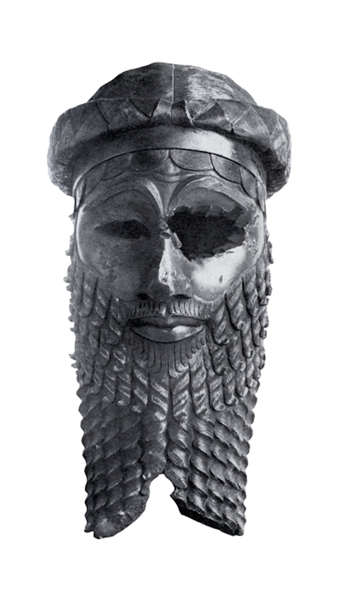
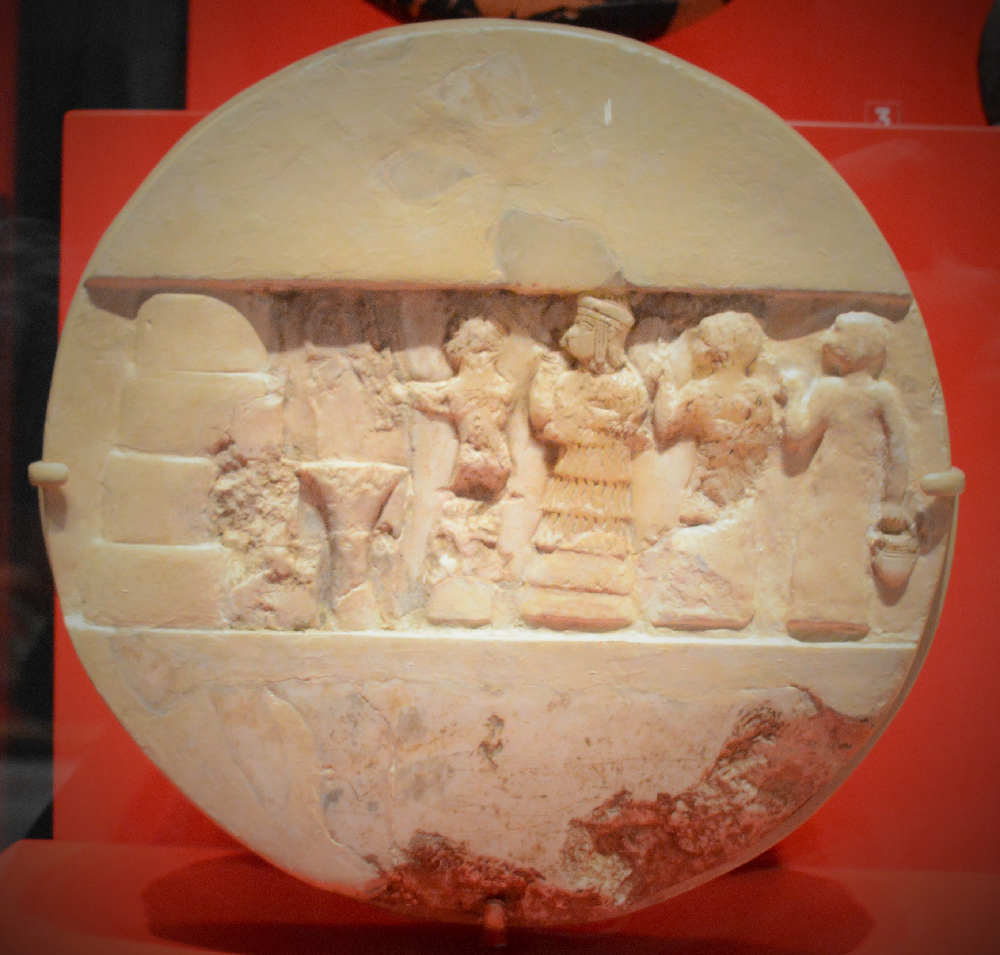
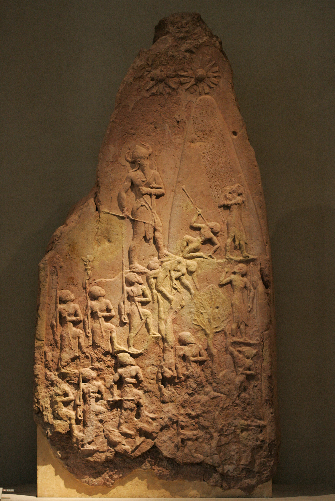
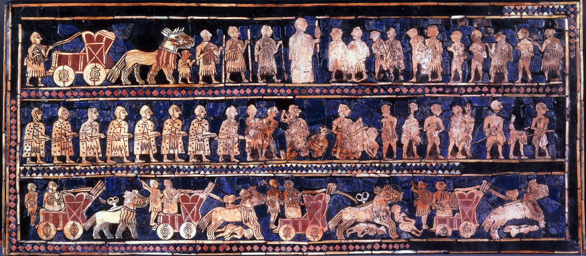
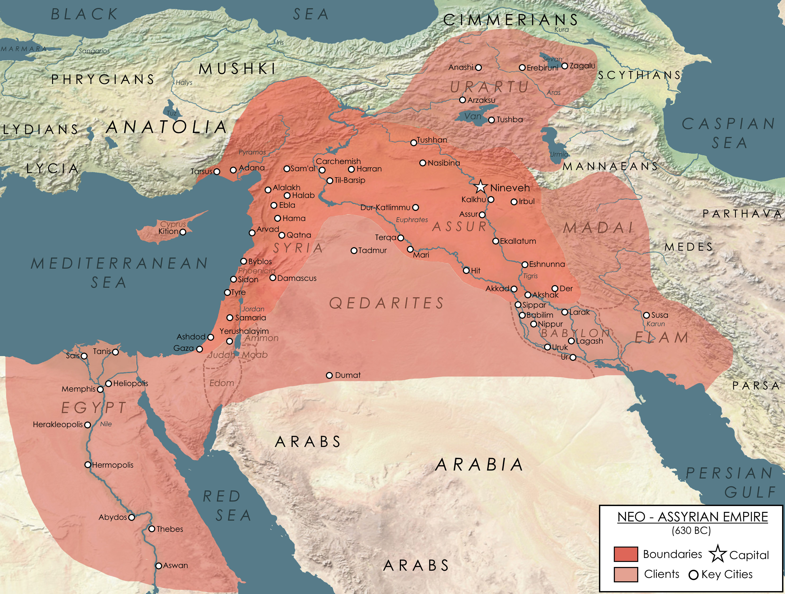

Akkad & the Akkadian Empire
The First Multinational Empire in the World
Akkad — also written as Agade — was the seat of the Akkadian Empire, the first state to bind the many peoples of ancient Mesopotamia under a single government. It rose in the second half of the third millennium BCE, founded (or, as some scholars argue, refounded) by a ruler that history remembers as Sargon the Great. The exact site of the city has never been located; the surviving sources place it somewhere along the Euphrates, most likely between Sippar and Kish.

From that lost capital, Sargon and his heirs unified the rival city-states of Sumer and pushed their authority outward until Akkadian scribes could boast of a realm reaching from the Persian Gulf to the Mediterranean coast and Cyprus. For a few generations it was the largest political entity the world had yet seen.
The King of Uruk & the Rise of Sargon
Little is certain about Sargon's origins. The later legends that grew around him — the abandoned infant set adrift on the river, the royal cupbearer who seized a throne — belong more to myth than to history. What the record does suggest is that the wealth and organisation already present in cities such as Mari, and across Sumer more broadly, gave an ambitious ruler the means to build a centralised state. Sargon brought the Sumerian cities under his own command, campaigned in every direction, and made Akkad the centre of his growing empire.
It is possible that Sargon restored Akkad rather than built it.

Sargon's Rule
Sargon's dynasty is remembered less for the extent of its conquests than for the administrative model it left behind — one that later Mesopotamian and Assyrian kings would copy for centuries. Akkad introduced a shared court language for record-keeping, standardised weights and measures, improved roads, and an early postal system whose clay-sealed messages could only be opened by breaking them open. Trusted governors were installed across the conquered cities to hold the empire together.
Sargon also placed his own daughter, Enheduanna, as high priestess of the moon god at Ur, giving him religious as well as political reach far from the capital. Her hymns survive to this day, and she is honoured as the earliest author in world history known to us by name.

Naram-Sin: Greatest of the Akkadian Kings
The empire reached its height about a century later under Sargon's grandson, Naram-Sin, who campaigned as far as the borders of Egypt and crushed a broad revolt of the subject cities early in his reign. He was the first Mesopotamian king to have himself declared a living god. On his famous victory monument he climbs a mountain above his fallen enemies, wearing the horned crown that marked divinity — a bolder claim of power than any king before him had dared to make.

The Decline of Akkad
Within a few generations of Naram-Sin's death the dynasty's fortunes collapsed. The state was worn down by repeated revolts, by raids from the Gutians of the Zagros mountains, and — according to more recent research — by a period of severe drought and famine brought on by climate change. By around 2154 BCE the Akkadian Empire had fallen, and its capital was abandoned so completely that its location remains one of the unsolved puzzles of Mesopotamian archaeology.

Conclusion
Even so, the memory of Akkad outlasted its ruins. The kings of Sargon's line were remembered as a golden standard of kingship, and their story passed into legend, poetry, and prophecy. The machinery of empire they built was revived by later powers — the kings of Ur, the Babylonians under Hammurabi, and above all the Neo-Assyrian Empire, which would once again unite Mesopotamia under a single crown. The first empire in the world had shown what was possible, and those who came after it never forgot.
